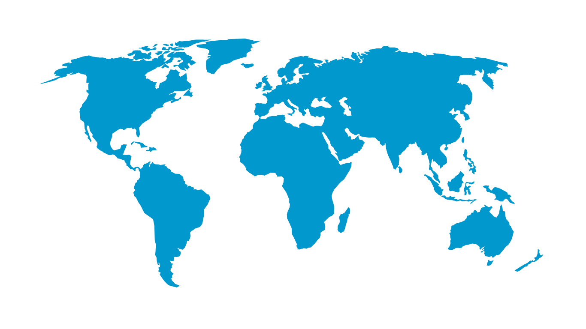
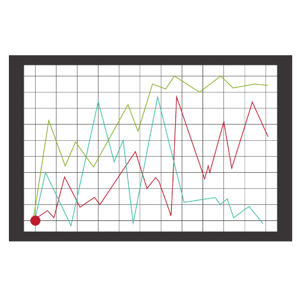
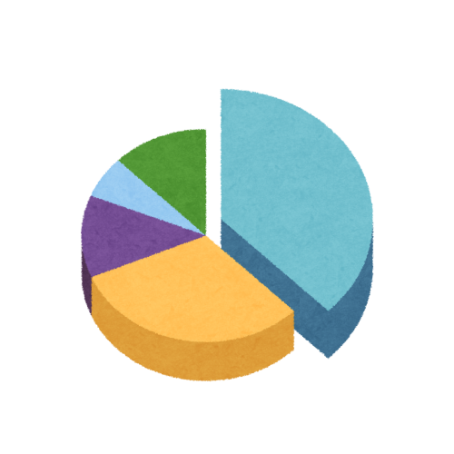

Introduction of My Wiki
What's Our Wiki?
As a core branch of life science, bioinformatics statistical analysis is vital to
ecological balance and epidemic prevention. Inspired by Japan's use of the Rshiny
framework to analyze regional epidemic data during COVID-19, this project's
horizontal-vertical comparison approach applies to resistance gene mining for all
epidemics. To address the lack of holistic research, we build a webpage to provide
inspiration for confused scholars, integrate relevant information for in-depth
researchers, and popularize animal epidemic knowledge for the public, realizing
overall epidemic information integration.
ecological balance and epidemic prevention. Inspired by Japan's use of the Rshiny
framework to analyze regional epidemic data during COVID-19, this project's
horizontal-vertical comparison approach applies to resistance gene mining for all
epidemics. To address the lack of holistic research, we build a webpage to provide
inspiration for confused scholars, integrate relevant information for in-depth
researchers, and popularize animal epidemic knowledge for the public, realizing
overall epidemic information integration.
So......
How to Use Our App?
Data Acquisition Module
First, select the required options in the data acquisition area:
Species
Disease Type
Region
Image Scale
Data
Analysis & Output
Module
Analysis & Output
Module
①After finishing all selections above, click the Analyze button.
②Choose your preferred Analysis Model and Chart Type.
③Click Export to save the result file to your local device.
②Choose your preferred Analysis Model and Chart Type.
③Click Export to save the result file to your local device.

